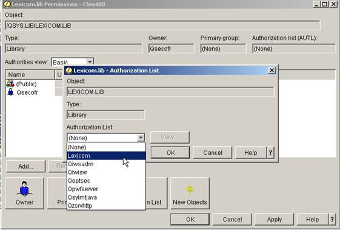

| AS/400 Configure and Test / Configuring for AS/400 Native or Integrated File System Access | |
As with objects defined in the /LexiCom IFS directory that are not owned by the user who originally created them, Authorization Lists may be used to allow users read and write access rights to specified NFS libraries and files. If read and/or write access is not properly assigned to users who will be reading and writing in the NFS directories, LexiCom will log errors that access to the request was denied.
To assign permissions based on Authorization Lists, open the File Systems tree in System i Navigator and expand the Integrated File System entry. Then under the QSYS.LIB entry, right-click on the LEXICOM.LIB folder to choose the Permissions menu item and choose the Authorization List option:
Select the LexiCom Authorization List in the drop-down list and press “OK”:

Now, verify that the LexiCom Authorization List has been assigned to the /LexiCom Object, set the Public permissions to From AUTL and click Apply: